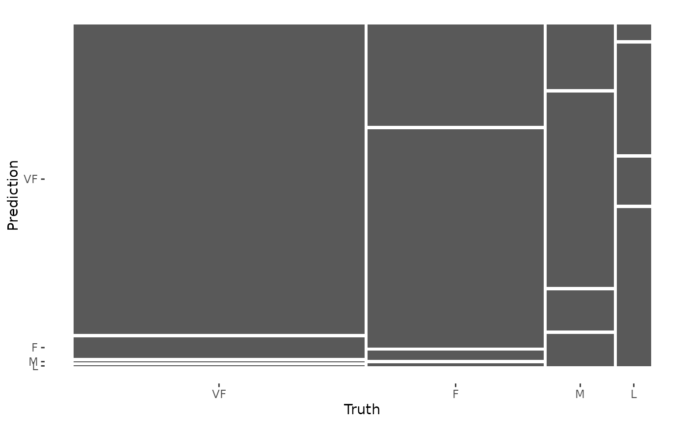

Calculates a cross-tabulation of observed and predicted classes.
Arguments
- data
A data frame or a
base::table().- ...
Not used.
- truth
The column identifier for the true class results (that is a
factor). This should be an unquoted column name although this argument is passed by expression and supports quasiquotation (you can unquote column names). For_vec()functions, afactorvector.- estimate
The column identifier for the predicted class results (that is also
factor). As withtruththis can be specified different ways but the primary method is to use an unquoted variable name. For_vec()functions, afactorvector.- dnn
A character vector of dimnames for the table.
- case_weights
The optional column identifier for case weights. This should be an unquoted column name that evaluates to a numeric column in
data. For_vec()functions, a numeric vector,hardhat::importance_weights(), orhardhat::frequency_weights().- x
A
conf_matobject.
Value
conf_mat() produces an object with class conf_mat. This contains the
table and other objects. tidy.conf_mat() generates a tibble with columns
name (the cell identifier) and value (the cell count).
When used on a grouped data frame, conf_mat() returns a tibble containing
columns for the groups along with conf_mat, a list-column
where each element is a conf_mat object.
Details
For conf_mat() objects, a broom tidy() method has been created
that collapses the cell counts by cell into a data frame for
easy manipulation.
There is also a summary() method that computes various classification
metrics at once. See summary.conf_mat()
There is a ggplot2::autoplot()
method for quickly visualizing the matrix. Both a heatmap and mosaic type
is implemented.
The function requires that the factors have exactly the same levels.
See also
summary.conf_mat() for computing a large number of metrics from one
confusion matrix.
Examples
library(dplyr)
data("hpc_cv")
# The confusion matrix from a single assessment set (i.e. fold)
cm <- hpc_cv |>
filter(Resample == "Fold01") |>
conf_mat(obs, pred)
cm
#> Truth
#> Prediction VF F M L
#> VF 166 33 8 1
#> F 11 71 24 7
#> M 0 3 5 3
#> L 0 1 4 10
# Now compute the average confusion matrix across all folds in
# terms of the proportion of the data contained in each cell.
# First get the raw cell counts per fold using the `tidy` method
library(tidyr)
cells_per_resample <- hpc_cv |>
group_by(Resample) |>
conf_mat(obs, pred) |>
mutate(tidied = lapply(conf_mat, tidy)) |>
unnest(tidied)
# Get the totals per resample
counts_per_resample <- hpc_cv |>
group_by(Resample) |>
summarize(total = n()) |>
left_join(cells_per_resample, by = "Resample") |>
# Compute the proportions
mutate(prop = value / total) |>
group_by(name) |>
# Average
summarize(prop = mean(prop))
counts_per_resample
#> # A tibble: 16 × 2
#> name prop
#> <chr> <dbl>
#> 1 cell_1_1 0.467
#> 2 cell_1_2 0.107
#> 3 cell_1_3 0.0185
#> 4 cell_1_4 0.00259
#> 5 cell_2_1 0.0407
#> 6 cell_2_2 0.187
#> 7 cell_2_3 0.0632
#> 8 cell_2_4 0.0173
#> 9 cell_3_1 0.00173
#> 10 cell_3_2 0.00692
#> 11 cell_3_3 0.0228
#> 12 cell_3_4 0.00807
#> 13 cell_4_1 0.000575
#> 14 cell_4_2 0.0104
#> 15 cell_4_3 0.0144
#> 16 cell_4_4 0.0320
# Now reshape these into a matrix
mean_cmat <- matrix(counts_per_resample$prop, byrow = TRUE, ncol = 4)
rownames(mean_cmat) <- levels(hpc_cv$obs)
colnames(mean_cmat) <- levels(hpc_cv$obs)
round(mean_cmat, 3)
#> VF F M L
#> VF 0.467 0.107 0.018 0.003
#> F 0.041 0.187 0.063 0.017
#> M 0.002 0.007 0.023 0.008
#> L 0.001 0.010 0.014 0.032
# The confusion matrix can quickly be visualized using autoplot()
library(ggplot2)
autoplot(cm, type = "mosaic")

autoplot(cm, type = "heatmap")